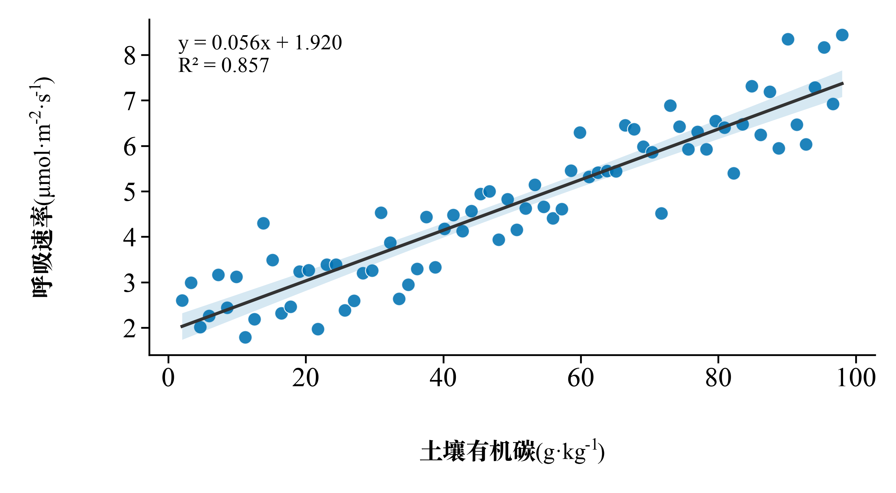
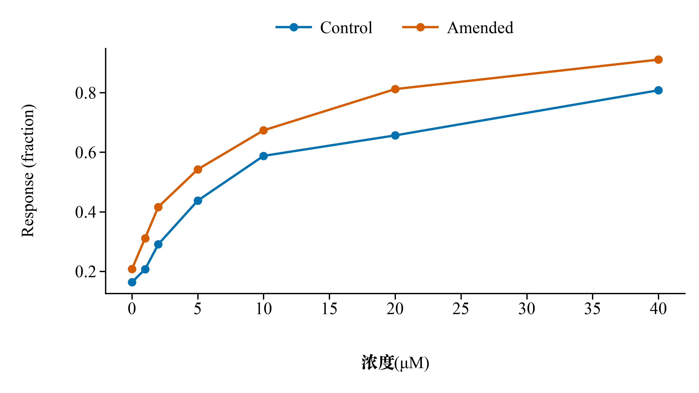
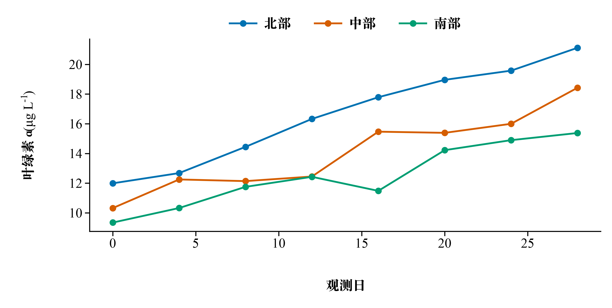
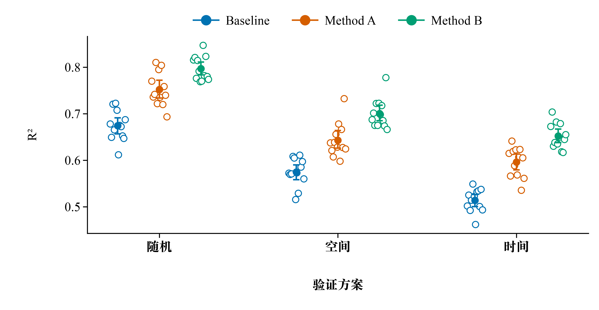
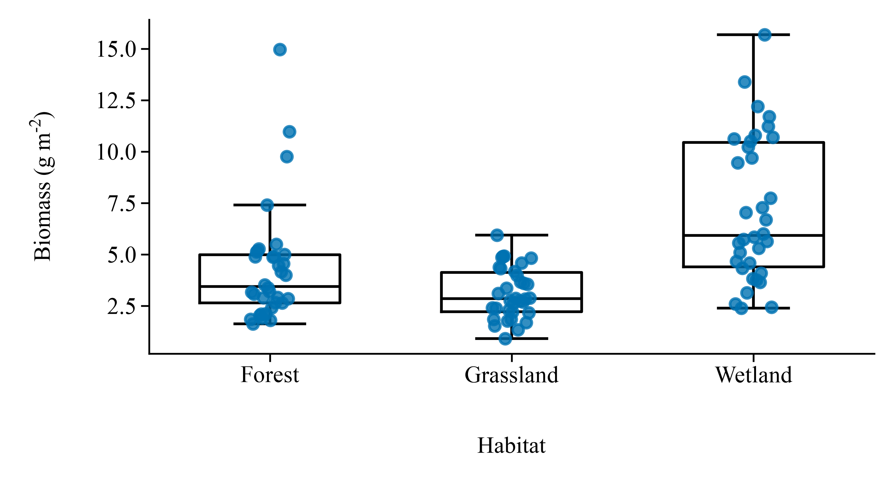
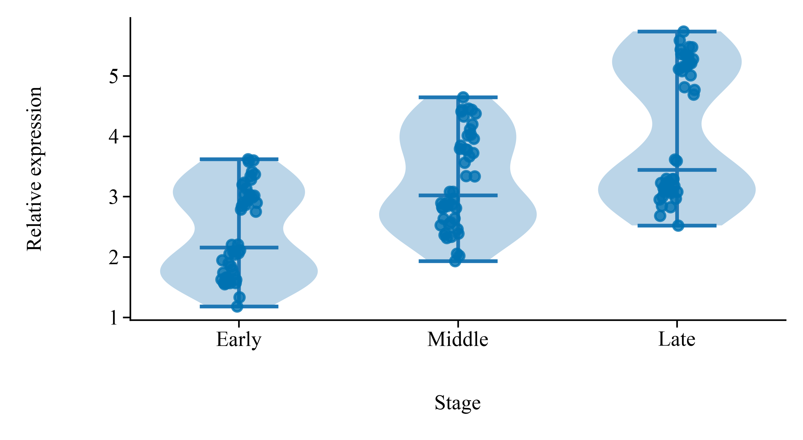
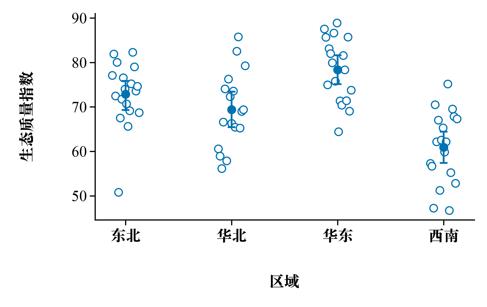
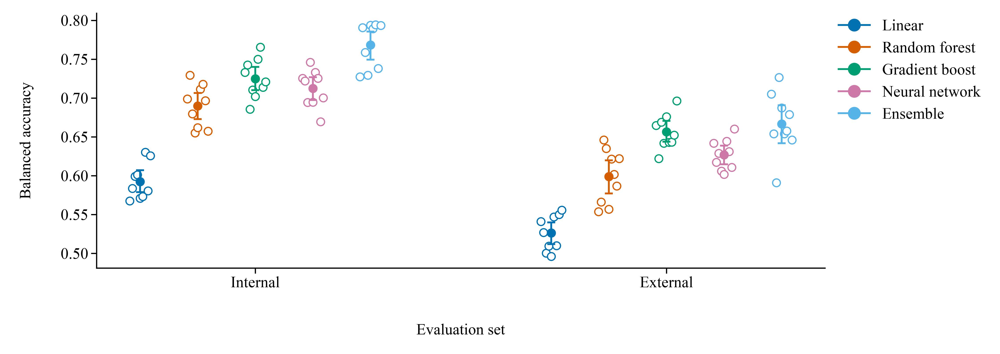

F01 · 连续变量散点

检查点密度、离群值、坐标轴和英文单位
使用 74 行 · QA: 通过 ·
PDF · SVG · QA · 配置
F02 · 双组剂量响应

检查折线辨识度、图例位置和科学单位
使用 14 行 · QA: 通过 ·
PDF · SVG · QA · 配置
F03 · 三组时间序列

检查多折线、中文图例和紧凑画布
使用 24 行 · QA: 通过 ·
PDF · SVG · QA · 配置
F04 · 处理组点汇总

检查原始点、均值和 95% bootstrap CI
使用 108 行 · QA: 通过 ·
PDF · SVG · QA · 配置
F05 · 偏态数据箱线图

检查偏态、离群值和原始观测的表达
使用 102 行 · QA: 通过 ·
PDF · SVG · QA · 配置
F06 · 双峰分布小提琴图

检查分布形状、重叠和分类标签
使用 138 行 · QA: 通过 ·
PDF · SVG · QA · 配置
F07 · 中文区域比较

检查纯中文标签、缺失值处理和窄图
使用 71 行 · QA: 通过 ·
PDF · SVG · QA · 配置
F08 · 五模型布局压力测试

检查五组颜色、右侧图例和长画布
使用 90 行 · QA: 通过 ·
PDF · SVG · QA · 配置